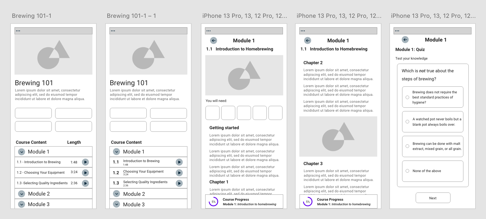
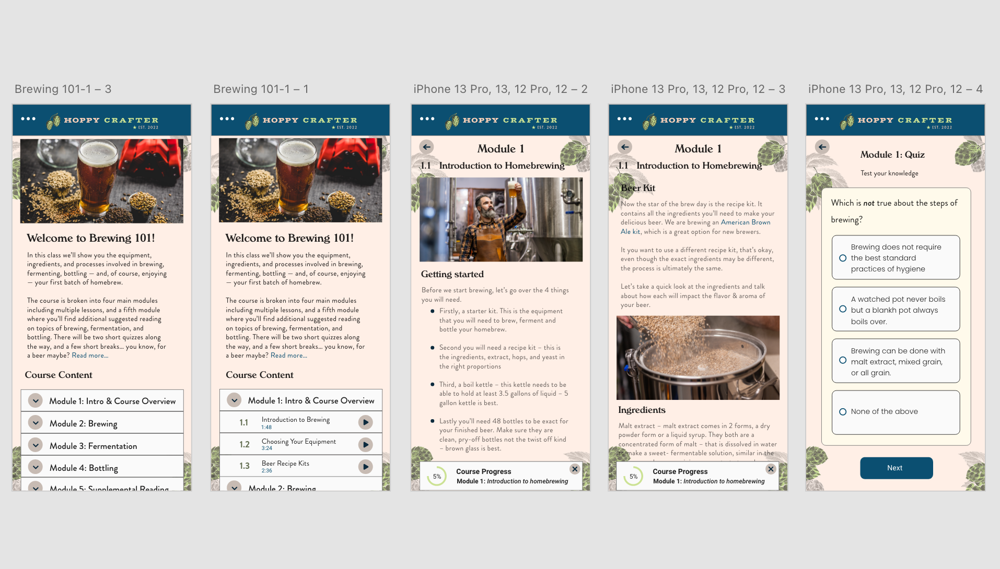
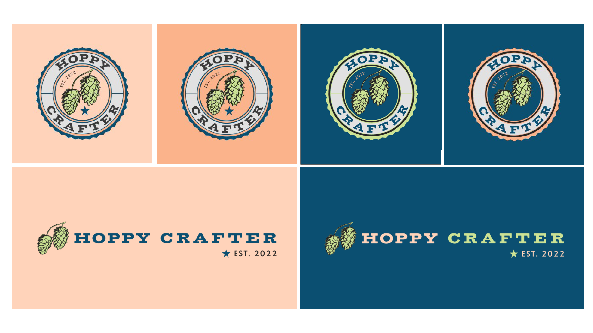
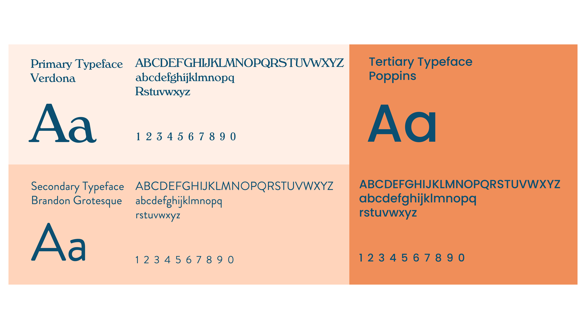
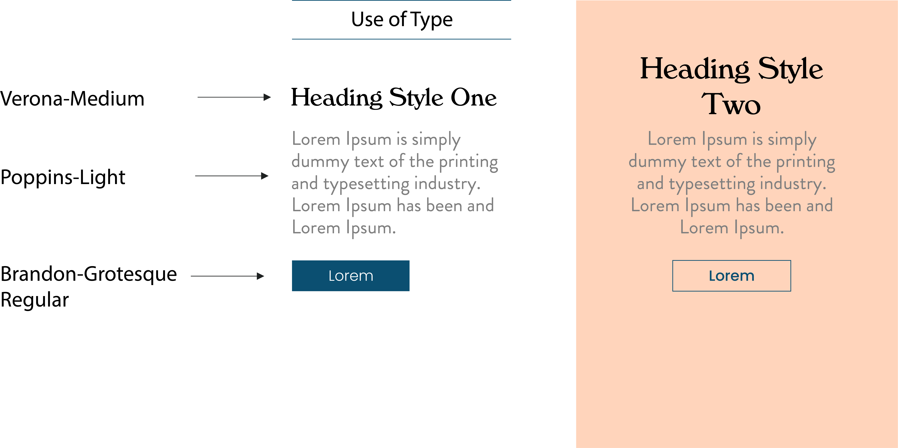

The overall user experience and interface was the backbone of this project. My ultimate goal for this project was all about crafting for an experience for mobile users kept using progressing through the course. Users have come to expect specificdesign patternswhen using their phones, even if they aren't aware of it. Navigation menus are in the top left, user profiles in the top right, swiping left or right to progress are all habits that have been ingrained in us through experience and repitition. Keeping this tactical memory in mind when designing The Hoppy Crafter app was key while maintaining my own sense of visual identity. Much time was spent on low fidelity layouts and testing before advancing to the high fidelity mockups.

The initial prototype I created using Adobe XD can be seen below. While it was functional, it wasn't quite meeting the goals I had set for this project initially. It lacked a fun environment and had too much bodycopy that made for a harder learning experience.

The second half was developing the brand, illustrations and motion pieces to aid users in the learning experience. Next I began working on my logos for the app. I spent some time sketching various text versus ornamental logos and digitized my favorites. For the logo I used a circlular shape to represent a bottle cap used in the beer making process. Logos were redesigned with a two-toned approach or had textured applied to help with visibility.

I composed a brand style packet to guide design choices for the target audience. It included standardizing font sizes for readability and sans serif types for clarity, color usage to engage the user.


The earthy colors I chose represent many of the colors found in beer brewing from lime green of hops to the orange hews in the malts and grains used. I paired these with other bright colors to create a bright and engaging atmosphere for the users as well a deep blue to bring in a touch of seriousness to the learning experience. Using colors in a more thoughtful manner not only provides more meaningful intentions but also improves clarity and helps all users better process information. The color choices are important for readability and clarity of the information in the app so this is something that needed to be addressed first. I broke the colors into primary, secondary, neutral colors and colors to be used in a supplementary manner.

My approach to help users understand the complexities of homebrewing was through fun and engaging illustrations and animations. Procreate was used for the majority of the illustrations which were done first by sketching out my design and applying watercolor brushes to achieve a softer look. I wanted to demonstrate my ability to bring my background in illustration together with both my academic and professional experiences to show those disciplines while aiding the user in learning

I used procreate and adobe illustrator to create my illustrations, adobe after effects & cinema 4D to animate them and figma to prototype the overall app experience.

.svg)